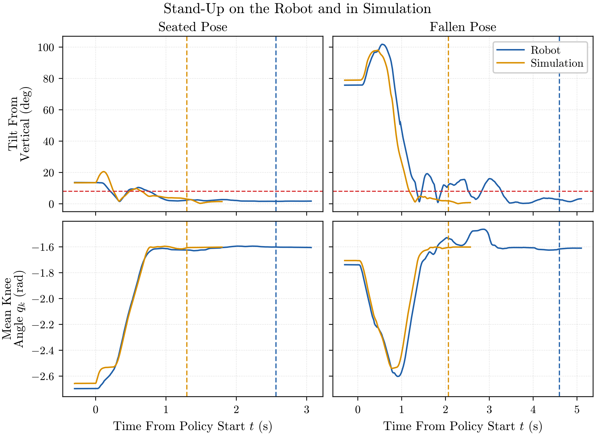
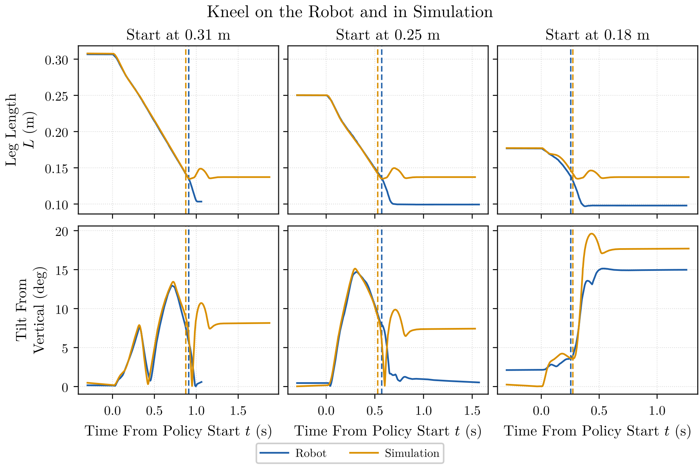
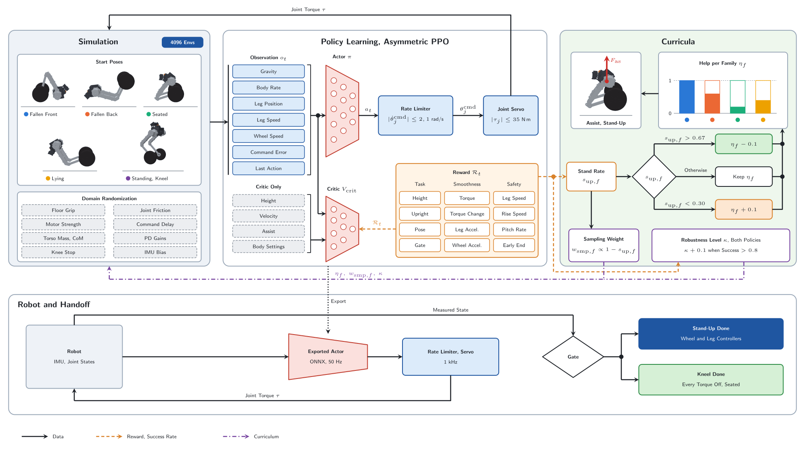

Overview
Two learned policies move OTTO between the floor and its balanced pose. The stand-up policy lifts the robot from any pose it can reach by falling and hands it to the wheel and leg controllers. The kneel policy lowers the balanced robot to its seat and then cuts every torque. Both motions have to be gentle, because a hard motion can break the robot.
The simulation of OTTO did not match the robot at first, so the policies are trained around a model identified from the real robot, described under Real-to-Sim.
Process
Start from the identified model
The simulation uses the motor, mass and sensor values identified from the real robot.
Train in parallel simulation
Thousands of simulated robots run in parallel in mjlab, which steps MuJoCo on the graphics processor. Each starts from a stored pose with a randomly changed body, and proximal policy optimization improves the actor.
Randomize around the identified model
The parameters are randomized around the identified nominal model. As the robots succeed, training removes help and widens the random changes.
Hand off on the robot
After training, only the actor runs on the robot. It outputs six numbers at 50 Hz, one for each leg joint and each wheel, and a gate decides when the motion has finished.
Results
Both policies run on the physical robot and pass the handoff gate. The stand-up hands over to the baseline controller from a seated pose and from a fallen pose. The robot takes about twice as long as the simulation to hand over. All three kneels reach the rest pose and cut the torque, and the robot and the simulation agree within \(0.04\,\mathrm{s}\) in duration at every leg length.
Table 1. Stand-up on the robot and in simulation, one trial each
| Level | Tilt at Start (\(^\circ\)) | Handover (s) | Knee Effort, Peak (\(\mathrm{N\,m}\)) | Motion |
|---|---|---|---|---|
| Seated, Robot | 13.6 | 2.56 | 14.3 | Handed Over |
| Seated, Simulation | 13.4 | 1.30 | 10.2 | Handed Over |
| Fallen, Robot | 75.7 | 4.60 | 16.7 | Handed Over |
| Fallen, Simulation | 78.9 | 2.07 | 21.4 | Handed Over |
The knee motion and the rise of the body match the simulation for the first second. From the fallen pose the robot then rocks, and the tilt crosses the \(8^\circ\) gate several times before it settles. The gate waits for a still robot, so each rock delays the handover. The knee effort stays below \(22\,\mathrm{N\,m}\) in every trial, under the \(35\,\mathrm{N\,m}\) servo limit, so the knees do not saturate.
Table 2. Kneel on the robot and in simulation, one trial each
| Level | Duration (s) | Tilt, Peak in Kneel (\(^\circ\)) | Tilt at Rest (\(^\circ\)) | Knee Effort, Peak (\(\mathrm{N\,m}\)) |
|---|---|---|---|---|
| 0.31 m, Robot | 0.91 | 12.9 | Not Given | 5.9 |
| 0.31 m, Simulation | 0.87 | 13.4 | 8.2 | 6.4 |
| 0.25 m, Robot | 0.57 | 14.7 | 0.5 | 5.9 |
| 0.25 m, Simulation | 0.53 | 15.1 | 7.4 | 6.9 |
| 0.18 m, Robot | 0.25 | 3.6 | 15.0 | 7.1 |
| 0.18 m, Simulation | 0.27 | 4.2 | 17.7 | 9.0 |
The duration grows with the start length, from \(0.25\,\mathrm{s}\) to \(0.91\,\mathrm{s}\). The policy lowers the legs at an almost constant rate and cuts the torque at a leg length of about \(0.14\,\mathrm{m}\), so a longer start takes longer. Up to the cut the leg length and tilt follow the simulation closely, and the peak tilt differs by less than \(1^\circ\). The knee effort stays near the gravity load, below \(7.1\,\mathrm{N\,m}\) on the robot and \(9.0\,\mathrm{N\,m}\) in simulation.
The two differ after the cut. On the robot the legs fold on to \(0.10\,\mathrm{m}\) and the body settles level, within \(1^\circ\) from \(0.25\,\mathrm{m}\). In simulation the legs stop at \(0.14\,\mathrm{m}\) and the body rests tilted by \(7^\circ\) to \(8^\circ\). From \(0.18\,\mathrm{m}\) both end tilted, by \(15^\circ\) on the robot and \(18^\circ\) in simulation. The robot log at \(0.31\,\mathrm{m}\) ends \(0.15\,\mathrm{s}\) after the cut, so its rest tilt is not given.


Figures and Video
